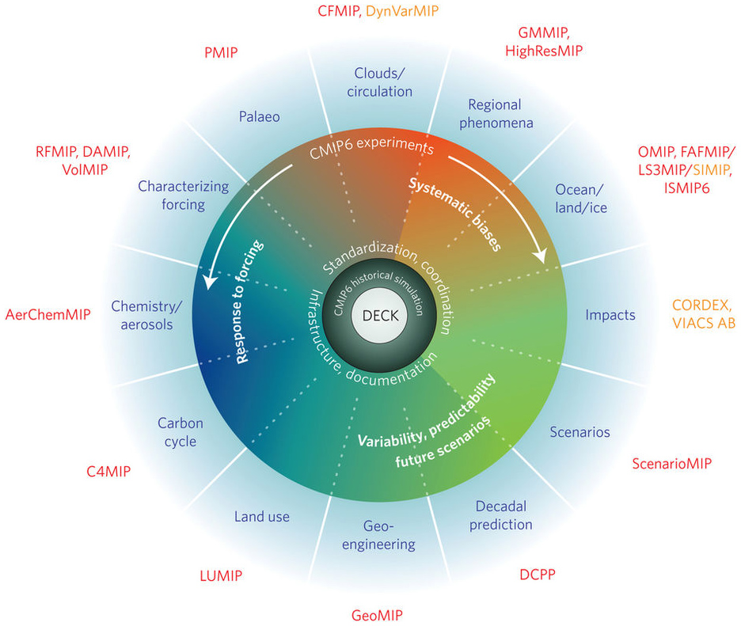
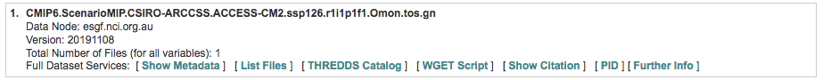

7 CMIP6 models
CMIP6 stands for Coupled Model Intercomparison Project (CMIP). These are climate models that simulate the physics, chemistry and biology of the atmosphere in detail (some of them!). The 2013 IPCC fifth assessment report (AR5) featured climate models from CMIP5, while the upcoming 2021 IPCC sixth assessment report (AR6) will feature new state-of-the-art CMIP6 models (more info in Carbon Brief website.)
The main goal is to set future climate scenarios based on future concentrations of greenhouse gases, aerosols and other climate forcings to project what might happen in the future.
7.1 Schematic of the CMIP/CMIP6 experimental design
7.1.1 Most common climate scenarios
From CMIP5 version you will find those as RCPs (Representative Concentration Pathways) but for the new CMIP6 version they are called SSPs (Shared Socio‐Economic Pathways).

7.2 Overview of SSPs
Most commonly SSPs used:
- SSP1-2.6: An optimistic scenario, characterised by a shift to a more sustainable economy and reduction in inequality resulting in a peak in radiative forcing of ~3 W m-2 before 2100
- SSP2-4.5: An intermediate scenario, with a stabilisation of radiative forcing levels at ~4.5 W m-2 by 2100
- SSP5-8.5: Characterised by a continued increase of greenhouse gas emissions resulting from a fossil-fuel-based economy and increased energy demand, with a radiative forcing >8.5 W m-2 by 2100
7.2.1 How to download CMIP6 models
CMIP6 models are free available at the Earth System Grid Federation website. You will need an account to download models. Check this tutorial of how to create an account.
Through the website:
- Click here to open the ESGF website
- Go to the Nodes tab to explore the different ESGF-CoG nodes
- Click the NCI link, the Australia National Computational Infrastructure node
Select a NCI node, go to collection and then CMIP6 link. This is the main website to download CMIP6 models. At your left you have several filters that you can play with, my advice is filter first for variable.
7.2.2 Variables
There are a range of variables available from the GCM (General Circulation Model) outputs. Each tab has different model variable on different time scales. The tabs are in alphabetical order. The ones starting with “O” are for Ocean, and then followed by the timescale (clim = climatology, day, dec = decade, mon = month, yr) (source: Mathematical Marine Ecology Welcome Book Chapter 9).
From the left tab:
- click the + in the variable option. Select tos (ocean temperature on surface). Then click Search
- click the + in the Realm option. Select ocean and ocnBgChem. Then click Search
- click the + in the Frequency option. Select mon. Then click Search
- click the + in the Variant Label option. Select r1i1p1f1 (this is the most common ensemble). Then click Search
The ensemble names “r1i1p1”, “r2i1p1”, etc. in Variant Label indicate that the ensemble members differ only in their initial conditions (the model physics are the same for all ensemble members, but the members were initialized from different initial conditions out of the control simulation). Hence, the differences between the ensemble members represent internal variability.
- click the + in the Experiment ID option. In this option you will see every single Experiment/Simulation. For example, G1/G6/G7 are the geoengineering climate scenarios. Go to the bottom of the Experiment ID tab and click ssp126. Then click Search
- click the + in the Source ID option for the full model list and their Institution ID. Let’s click on ACCESS-CM2 model from the CSIRO. Then click Search
If you have follow the previous steps you should get a tab result similar to this:

To download the model, just click on the List Files tab and then select HTTP Download